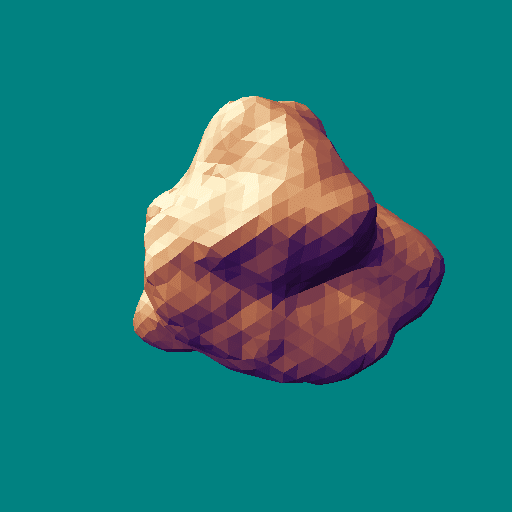
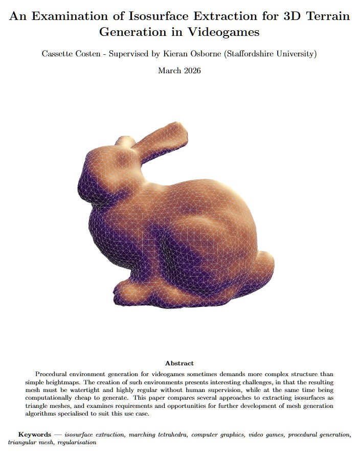
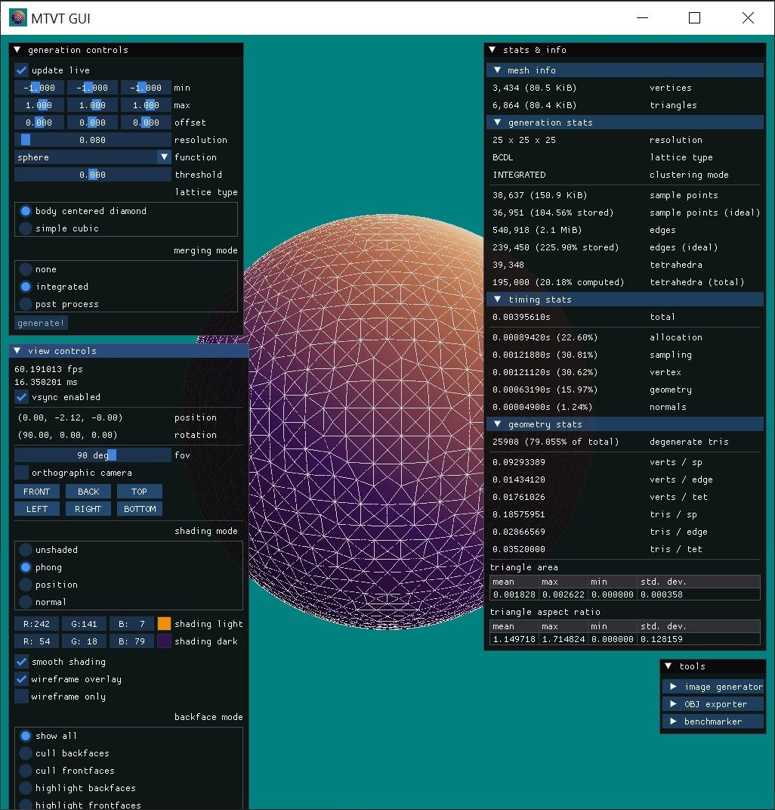
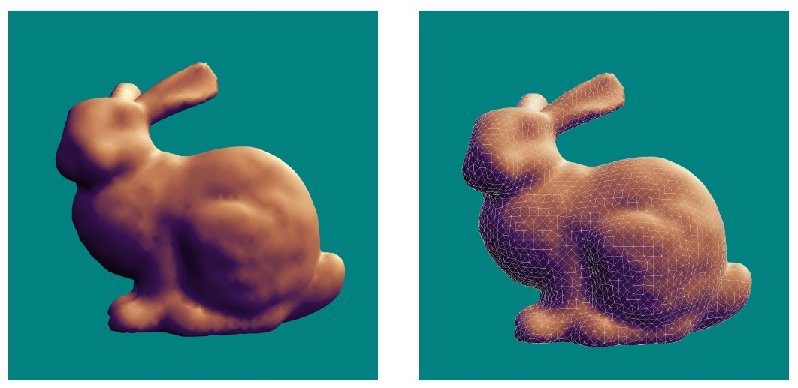
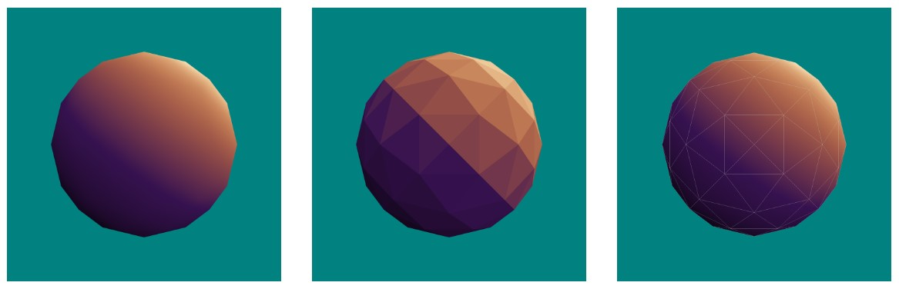
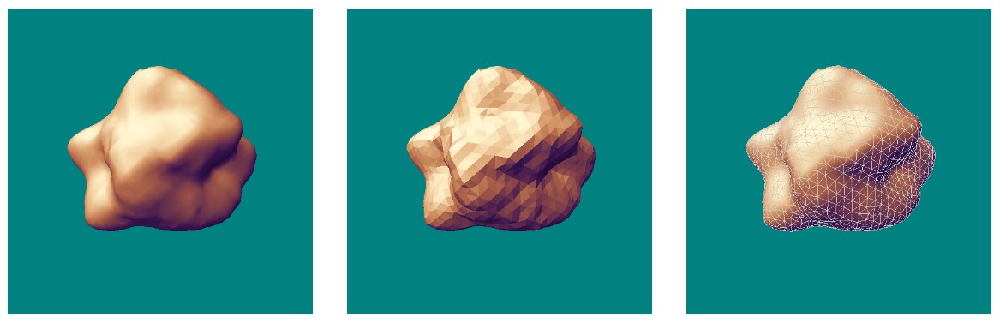
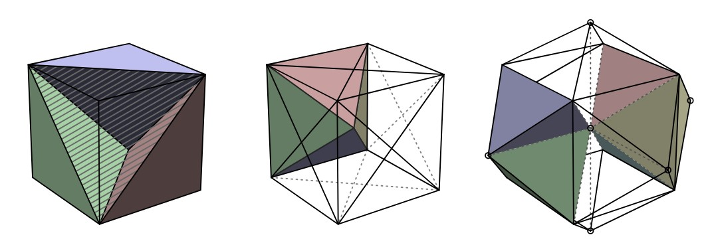
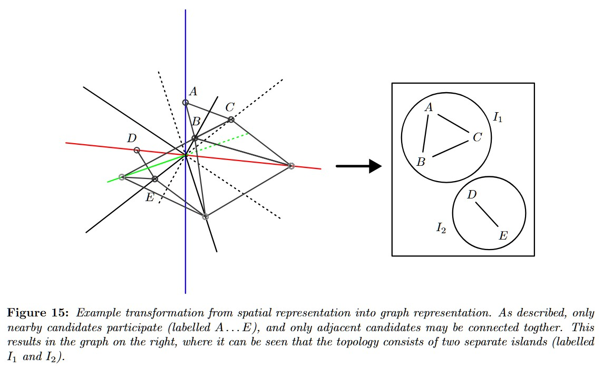
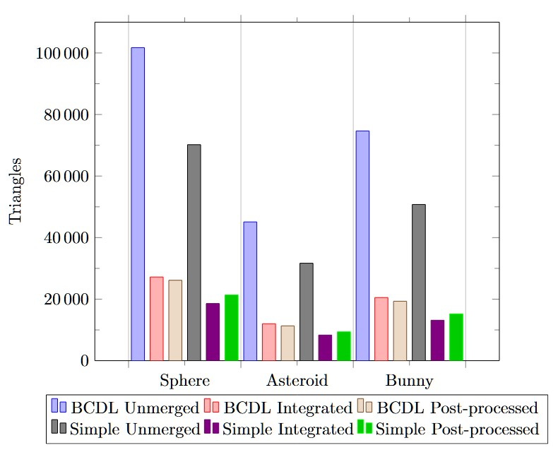
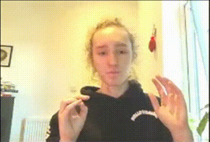

for my final year project at Staffs, i researched isosurface extraction for videogame terrain generation. in particular, i was interested in generating non-heightmap terrain, like an asteroid!

for the project, i did a whole lot of literature reviewing, implemented the Regularised Marching Tetrahedra algorithm presented by Treece, Prager, and Gee (1999) with some adaptations, and then tested some variations on the algorithm via benchmarks and a questionnaire to evaluate how the variations performed in terms of triangle count, regularity, performance, and visual quality.
i also completed a viva at the end of the project for my supervisor. thank you Kieran Osborne for your fantastic mentorship as my supervisor throughout the project, i really appreciated it.
the principle of isosurface extraction is that, given a scalar function (e.g. f(x,y,z) = x^2 + y^2 + z^2) and a threshold value (e.g. f(x,y,z) = 1), a surface can be constructed which divides the regions where the scalar function is greater or less than the threshold. the extraction part is then just turning that theoretical surface into a triangle mesh.
however, for videogame meshes, there are a few specific requirements to consider:
minimal triangle count, for rendering/storage performance
time/memory cost of computation
reliably watertight meshes with correct topology (holes or non-manifold mesh features are not allowed)
good shading quality - mostly depending on regular, even triangles
with those requirements in mind, i evaluated some different ways of tesselating 3D space with tetrahedra, and some different methods for regularising the mesh (i.e. cleaning up tiny or elongated triangles).
if you're interested to learn more, i highly recommend you read my dissertation paper!

front cover of my dissertation. i'm super proud of it!
in addition to implementing the algorithm itself, i built an OpenGL-powered visualisation environment where you can play with the settings for the algorithm in realtime.

i really just want to show off some of the results, and diagrams from the project, so enjoy below.
all of these were taken directly from the paper itself. go read it!



here are some of the diagrams i made for the paper, mostly using Inkscape.


finally, one of the key results - a huge 75%+ reduction in triangle count for my test models!

anyway basically go read the paper and try out the interactive demo application!

girl who uses her hands too much when explaining things